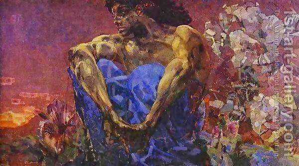

Yoma 57 - Even when not perfect
The blood of the goat is subject to the same number and manner of sprinklings against the Ark as the blood of the bull. The verse continues, " And he shall do this in the Tent of Meeting that dwells among them in the midst of their impurities ." This teaches that God’s presence dwells among the Jews even when they are impure and imperfect.
A certain Sadducee said to Rabbi Chanina, "Now that you have been exiled, you are certainly impure," meaning, that Divine Presence is not found among you, as the verse in Jeremiah says, "A nd her impurity is on her hem ." Rabbi Chanina proved him wrong by quoting the verse above.
We mentioned before that the blood never lands on the Ark itself. However, Rabbi Elazar disagrees. Once he and Rabbi Shimon bar Yochai travel to Rome to annul some evil decrees. They met a demon Ben Tamalyon who offered to help them. The demon possessed the Caesar’s daughter, and she became insane. When the two Sages healed her, the Caesar offered them anything from his treasury. They were only interested in annulling the decrees, which they did. It was then that Rabbi Elazar saw Temple articles and among them the Curtain. He now says that he saw it and it had multiple spots of blood. But there are ways to explain this in a different manner.
Seated Demon by Mikhail Aleksandrovich Vrubel